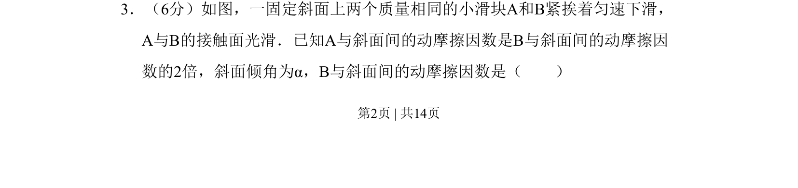
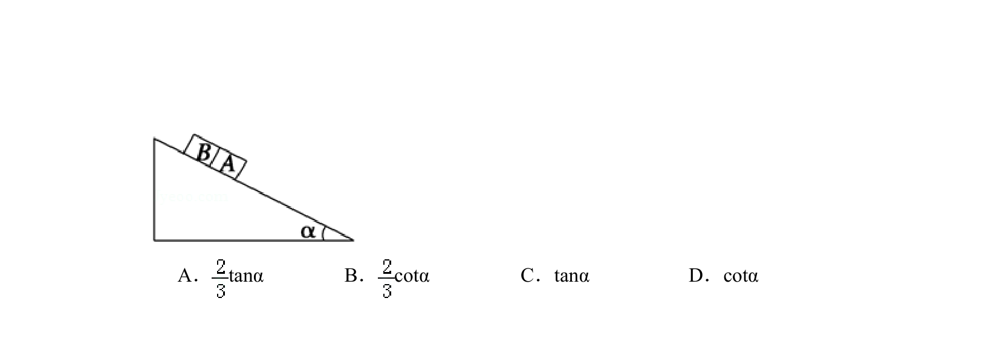
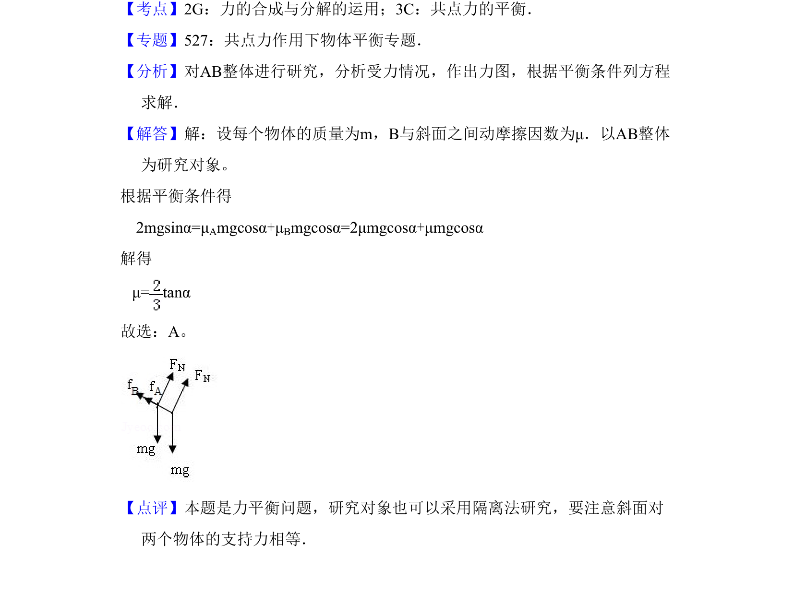

考点：受力分析 共点力平衡 滑动摩擦力 动摩擦因数


该题基于滑块在斜面上的匀速运动平衡状态，求解B滑块与斜面间的动摩擦因数。

📄 原 PDF 第 2 页：
素材/真题/吉林/2008-2024·（吉林）物理高考真题/2008年高考物理试卷（全国卷Ⅱ）（解析卷）.pdf
3．（6分）如图，一固定斜面上两个质量相同的小滑块A和B紧挨着匀速下滑， A与B的接触面光滑．已知A与斜面间的动摩擦因数是B与斜面间的动摩擦因 数的2倍，斜面倾角为α，B与斜面间的动摩擦因数是（ ）